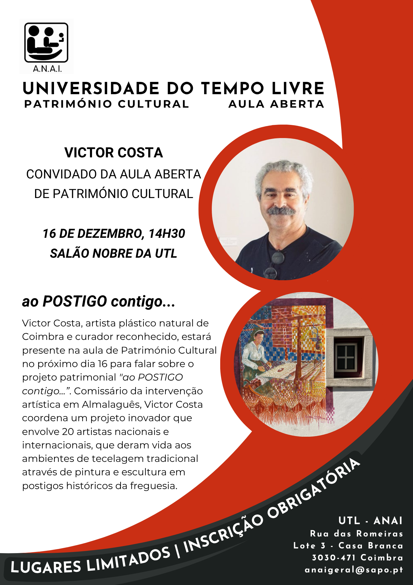

Aula Aberta
ao POSTIGO contigo...
16 de dezembro · 14h30 · Salão Nobre da UTL
Victor Costa
Victor Costa, artista plástico natural de Coimbra e curador reconhecido, esteve presente na aula de Património Cultural para falar sobre o projeto patrimonial «ao POSTIGO contigo...». Comissário da intervenção artística em Almalaguês, Victor Costa coordena um projeto inovador que envolve 20 artistas nacionais e internacionais, que deram vida aos ambientes de tecelagem tradicional através de pintura e escultura em postigos históricos da freguesia.
